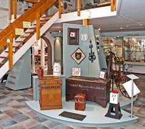
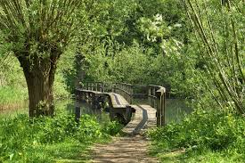

Weetjes over Ridderkerk
- Ridderkerk is een gemeente in Zuid-Holland op het eiland. De gemeente telt 47.071. Bij Ridderkerk ligt
het drukke verkeersknooppunt 'Ridderkerk' van de Rijkswegen A15 en A16.
- De naam Ridderkerk is afkomstig van Riederkercke, waarbij 'ried' verwijst naar het Oudnederfrankische woord voor riet.
- Gelegen langs de rivieren de Noord en de Nieuwe Maas ontwikkelden zich in vroeger jaren diverse scheepswerven in de wijken Bolnes
en in Slikkerveer.
- De wijk Rijsoord kreeg tijdens de Tweede Wereldoorlog landelijke bekendheid doordat
daar op 15 mei 1940 in een schoolgebouw de capitulatieovereenkomst tussen Nederland en Duitsland werd ondertekend.
- Enkele bekende Nederlanders die uit Ridderkerk komen:
Lee Towers (zanger),
Kevin Strootman (voetballer),
Bart Deurloo (turner)

Oudheidskamer
De Ridderkerkse Oudheidkamer treft u aan in de historische dorpskern, aan de Kerksingel. Het plaatselijk museum
huist in de voormalige, uit 1840 daterende, dorpsschool. De school werd begin jaren tachtig van de vorige
eeuw verbouwd en ingericht als Oudheidkamer. Sinds die tijd hebben de activiteiten van de Stichting Oud Ridderkerk een grote vlucht genomen.
In een permanente tentoonstelling wordt de historie van Ridderkerk belicht en zijn tal van typisch Ridderkerkse zaken te bezichtigen.
Daarnaast wordt door de Stichting zo’n 8 tot 10 maal per jaar een wisselexpositie ingericht over een keur van onderwerpen. Deze onderwerpen
variëren: Ridderkerkse kunstenaars exposeren en het Ridderkerks verenigingsleven krijgt, bijvoorbeeld ter gelegenheid van een jubileum, de mogelijkheid
om iets over hun werk en geschiedenis te laten zien. Kortom, de Oudheidkamer is van en voor de Ridderkerkers.
Op de “Singelzolder” worden lezingen, dia-voorstellingen en informatiebijeenkomsten gehouden.

Natuurgebieden
Het natuur- en recreatiepark De Gorzen is een voormalige vuilstort; en niet zo maar een park.
Het is niet op de gebruikelijke wijze op de tekentafel ontworpen en daarna aangelegd. Ten gevolge van
allerlei activiteiten en omstandigheden is het in een periode van een halve eeuw gegroeid. Daardoor
biedt het op een oppervlakte van een slechts 40 hectare een gevarieerd landschapsbeeld dat je op het
vlakke eiland IJsselmonde niet zou verwachten.
De Crezéepolder (50 hectare) is een stuk getijdenatuur tussen
Ridderkerk en Hendrik-Ido-Ambacht. Vroeger lag hier akkerland. In 2016 veranderde dat. Toen werd de zomerkade
langs de Noord doorgestoken, zijn er geulen gegraven en mocht de natuur het gebied overnemen. Sindsdien bepaalt
het water van getijdenrivier de Noord het ritme van de Crezéepolder: met eb komen de slikken droog te liggen.
Met vloed vullen de geulen en kreken zich met zoet water. Zoetwatergetijdengebieden zijn zeldzaam. In Nederland,
maar ook in Noordwest-Europa.